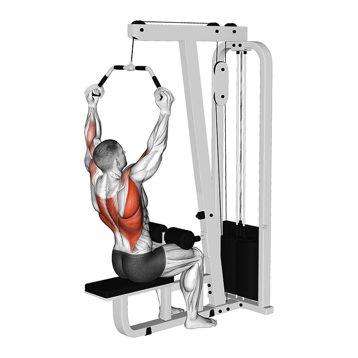

1. Jalón al pecho
Tirón vertical base del día, muy bueno para dorsales y trabajo general de espalda.
Técnica clave: saca pecho, baja hombros y lleva los codos hacia abajo con control.
Tip: piensa en tirar con los codos, no solo con las manos.
Error común: echarte demasiado hacia atrás y convertirlo en una especie de remo.
Registro
Sin registro guardado todavía.